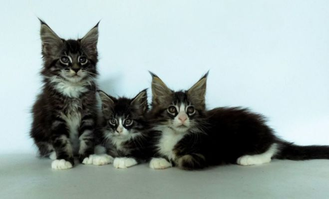
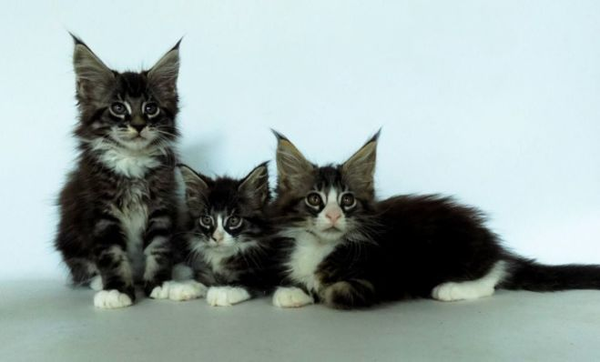
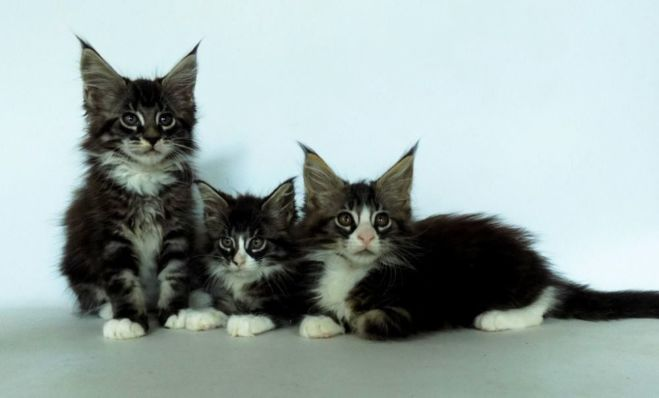
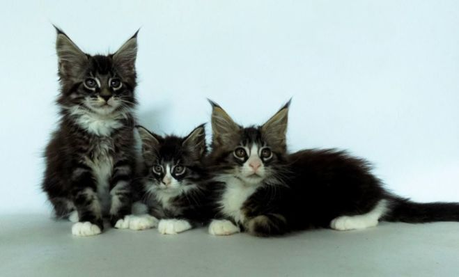

Сейчас есть в наличии:
 

 


Перед разведением следует определиться, с какими породистыми кошками лучше работать. Теперь, когда Вы уже знаете информацию о составляющих ценовой политики, предоставляем Вашему вниманию «рейтинг» 10 самых дорогих кошек в мире:
1. Саванна. Эта кошка является самой дорогой в мире. Данную породу кошек классифицируют между собой на F1, F2, F3, F4, F5. Самые дорогие породистые кошки это F1 и F2. Стоимость взрослых особей колеблется в пределах от 4000$ до 22000$.
2. Алмазный глаз. Она же као-мани. Стоимость данных кошек может достигать 2 тыс. условных единиц.
3. Бенгальская кошка. Ценовая политика этих домашних любимчиков начинается от 1000$ и может доходить до 4000$.
4. Тойгер. Цена такого «домашнего тигра», в зависимости от его показателей по стандартам ТІСА, также как и у бельгийцев может достигать 4000$-5000$.
5. Мейн-Кун. Он же американский енотовый кот. Эта порода обладает ценовой категорией от 1000$ до 2500$.
6. Давно Рекс. Цена может быть 400$ а может и 1200$, все зависит от параметров, определяющих стоимость котенка.
7. Шотландская вислоухая. Цена на шотландских вислоухих, начинается от отметки 200$ и достигает до 1500$.
8. Британская кошка. Цена этих красавцев, аристократических манер, колеблется от 200$ до 1500$.
9. Русская голубая. Данная порода является одной из самых известных пород во всем мире. Цена этих миролюбивых и игривых домашних питомцев от 300$ до 3000$.
10. Мэнкс. Выделяется эта порода среди других отсутствием хвоста. Или имеет 2/3 от обычного кошачьего хвостика. Цена мэнксов от 500$ до 4000$.
Для начала приобретения опыта в разведении породистых кошек стоит присмотреться на не прихотливые и весьма прибыльные породы такие как:
За ними легко ухаживать, они привлекательны и прекрасно подходят для организации кошачьего питомника. В отличие от собак, породу которых определить гораздо проще даже по внешним отличиям, все кошки очень похожи между собой. Фелинологи развернули свою активную деятельность только в начале прошлого века и даже на сегодняшний день несмотря на четкую градацию по породным признакам, сосчитать чистокровных кошек практически нереально. Так или иначе, в мире насчитывается порядка 60 пород кошек и около 200 разновидностей очаровательных пушистиков. По классификации коты разделяются на следующие 5 больших групп,отличающихся друг от друга длиной шерстки и некоторым особенностям телосложения:
Уже давно замечено, что представители разных пород отличаются по своему характеру. Наблюдение за домашним любимцем также поможет узнать породу кошки. Канадского сфинкса почти никто не может уличить в необоснованной агрессии. Они не трогают обивку вашей мебели, хорошо обучаются и не испытывают боязни к собакам. Мейн-куны любят играть с детьми и неплохо дрессируются, но их необходимо часто и подолгу выгуливать на природе, заточение в квартире они долго не переносят. Курносая мордочка персов выглядит недовольно, но это только внешний обман. Они любят ласку и внимание, как и все кошки, и способны крепко подружиться с любым человеком. Экзоты любознательнее, чем их родственники персы и чуть поактивнее. Переезд к новому хозяину для кота этой породы не превратится в проблему, что говорит об их способности легко приспосабливаться. Сибирские кошки заслуженно славятся, как самые умелые охотники на мышей. Если она попадает в компанию к другим пушистым любимцам, то всегда пытается верховодить ими, ведь сибиряки – прирожденные лидеры. Примерно такое же описание можно дать и другим представителям этих красивых животных, что поможет хозяйке легко определить породу ее любимой кошки.